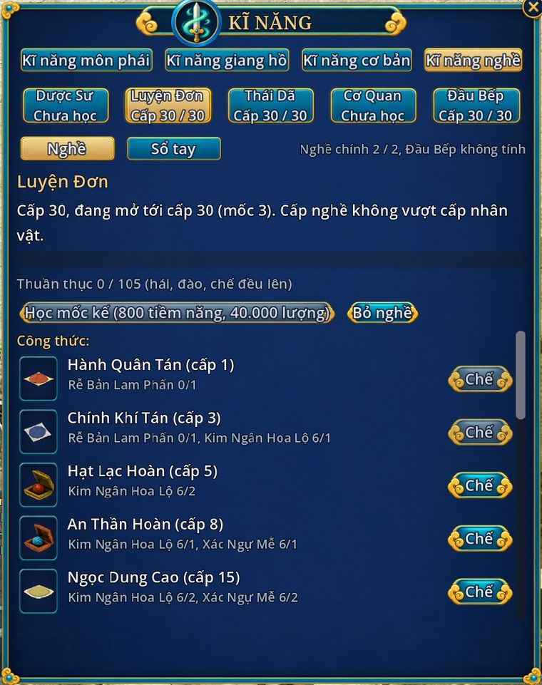

Học nghề
- Phím
- Alt+N, tab Kĩ năng nghề
- Ở đâu
- Thầy nghề ở Chu Quốc
- Mấy nghề
- 2 nghề chính, thêm Đầu Bếp
- Tốn gì
- Tiềm năng, ngân lượng mỗi mốc

| Nghề | Làm gì |
|---|---|
| Dược Sư | Hái thảo dược, chế phấn |
| Luyện Đơn | Chế thuốc hồi, giải độc, tăng kháng |
| Thái Dã | Đào khoáng, luyện thỏi |
| Cơ Quan | Chìa khoá, túi, tạc đạn, cấu kiện |
| Đầu Bếp | Món hồi dần, món tăng chỉ số |
- Tới thầy nghề ở Chu Quốc: Dược Sư, Luyện Đơn Sư, Công Tượng Mỏ (Thái Dã), Cơ Quan Sư (Tề Quốc cũng có), Đầu Bếp. Chọn "Học nghề ...".
- Hái, đào, chế: mỗi lần đều cộng thuần thục, đủ thì lên cấp.
- Mỗi 10 cấp nghề, quay lại thầy học mốc kế để mở tiếp.
- Tối đa 2 nghề chính, Đầu Bếp ai cũng học thêm được. Cặp hợp nhau: Dược Sư + Luyện Đơn, Thái Dã + Cơ Quan.
- Cấp nghề không vượt cấp nhân vật, tối đa 150.
- Không tốn thể lực, không giới hạn mỗi ngày. Việc sát cấp nghề cộng nhiều hơn việc quá dễ.
- Công thức đầu tiên biết sẵn. Công thức khác mua ở thầy nghề ("Mua công thức, nguyên liệu") hoặc rơi từ Bảo Rương.
Trong bang, kĩ năng Ưu Đãi Nghề giảm giá học mốc và tăng tỉ lệ chế thành công.
Số liệu chi tiết
- Mốc thứ n tốn 200 × n tiềm năng và 10.000 × n lượng. Lên cấp nghề 50 tốn tổng 3.000 tiềm năng, 150.000 lượng.
- Giá công thức: 1.000 × cấp yêu cầu, ít nhất 2.000 lượng.
- Hái, đào 3 giây mỗi lần; chế 2 giây; một lệnh chế tối đa 100 lần.